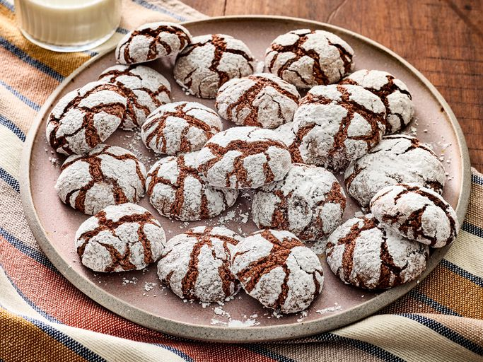

Home
Chocolate Crinkle Cookies

This chocolate crinkle cookies recipe makes a rich, fudgy cookie
that's coated in confectioners' sugar for its signature crackled look.
Ingredients
- 2 cups white sugar
- 1 cup unsweetened cocoa powder
- ½ cup vegetable oil
- 4 large eggs
- 2 teaspoons vanilla extract
- 2 cups all-purpose flour
- 2 teaspoons baking powder
- ½ teaspoon salt
- ½ cup confectioners' sugar
Steps
-
Mix sugar, cocoa, and oil together in a medium bowl.
Beat in eggs, one at a time, until combined. Stir in vanilla extract.
-
Whisk together flour, baking powder, and salt in another medium bowl;
gradually stir into cocoa mixture until just combined; dough
will be sticky. Cover and refrigerate until firm, 4 hours to overnight.
-
Mix sugar, cocoa, and oil together in a medium bowl. Beat in eggs,
one at a time, until combined. Stir in vanilla extract.
-
Whisk together flour, baking powder, and salt in another medium bowl;
gradually stir into cocoa mixture until just combined; dough will be sticky.
Cover and refrigerate until firm, 4 hours to overnight.
-
Bake in the preheated oven until edges set and tops crackle, 10 to 12 minutes.
Let cool on the cookie sheet for a few minutes to firm up; transfer to wire
racks to cool completely. Repeat with remaining dough.
Recipe source